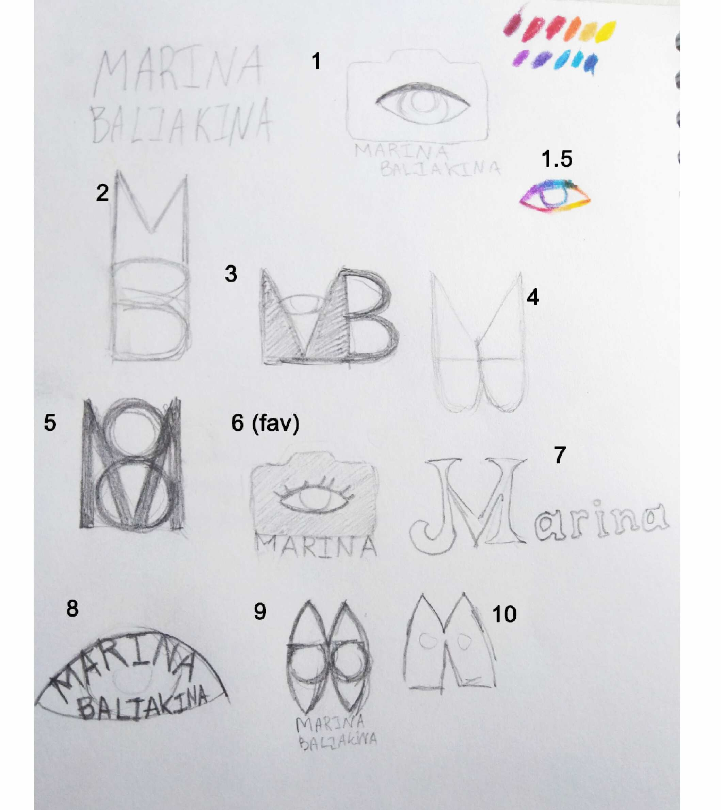
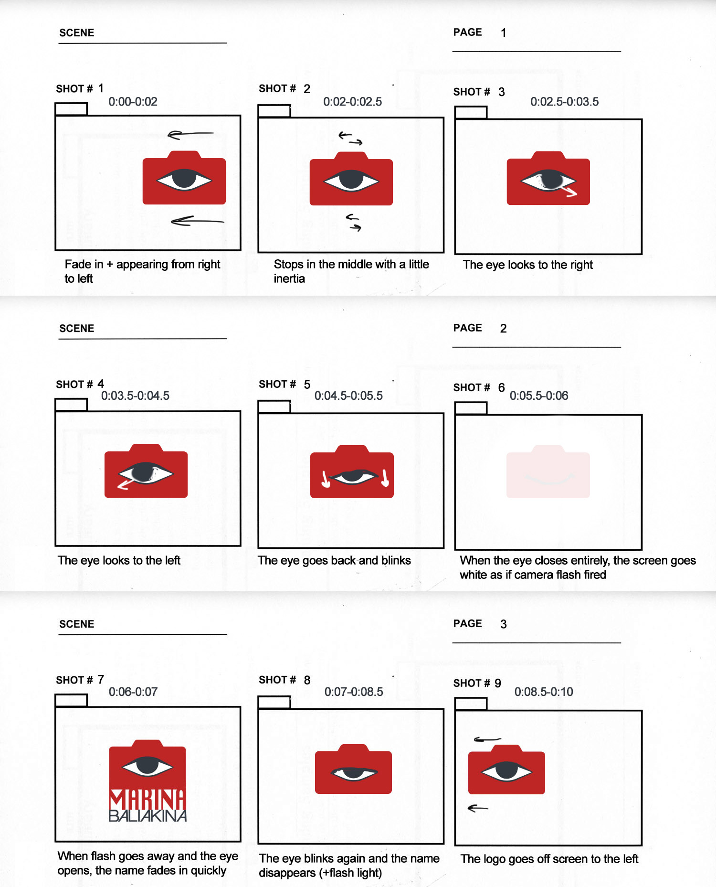

01
Sketches to Vector
Started with hand-drawn logo sketches exploring how my name could become a personal mark, then refined the strongest direction into a clean vector version for animation.

An animation of an older personal logo version built around my name, developed from early sketches into a clean vector mark and then translated into motion.
Started with hand-drawn logo sketches exploring how my name could become a personal mark, then refined the strongest direction into a clean vector version for animation.

Planned the logo reveal through a storyboard, working out the order of movement, timing, and transitions before building the final animation.

Created the final animated logo reveal with simple timing, movement, and contrast so the personal mark feels polished while staying readable.
The final piece turned an early personal identity concept into a short motion logo that could be used as a portfolio intro, branded social asset, or title sequence.